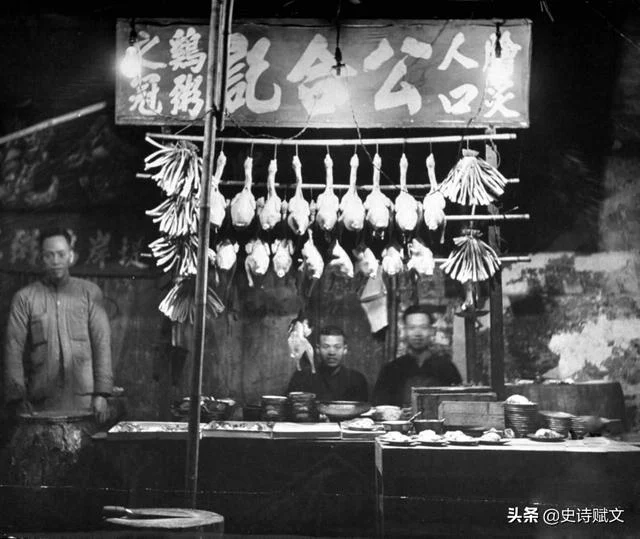
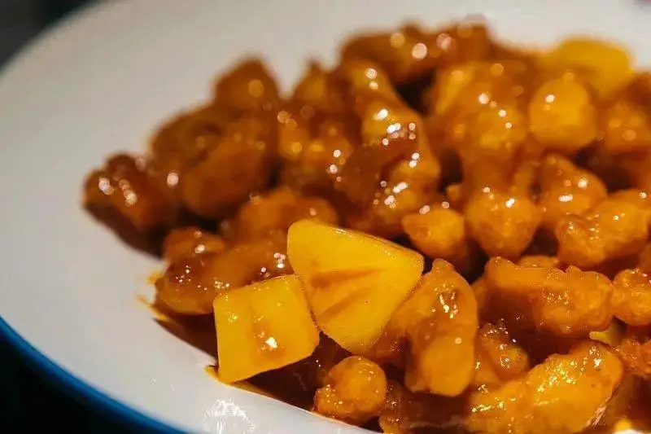
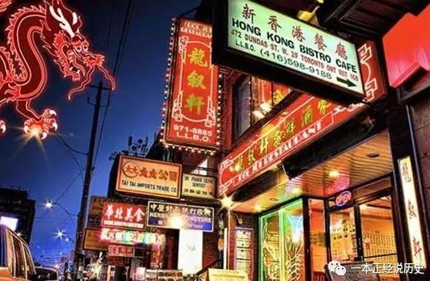
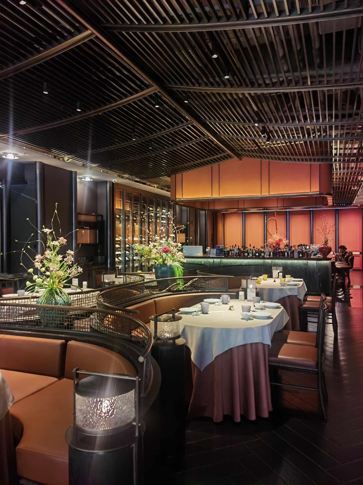
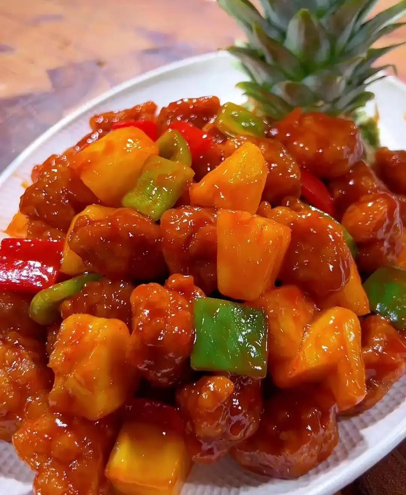

Origins in Cantonese Cuisine (18th-19th Century)
During the late Qing Dynasty, foreign merchants gathered in Guangzhou. They found it inconvenient to eat dishes like whole fish or chicken because of the bones. Sweet and sour pork, being boneless and deep-fried, was easier to eat. Its balanced sweet and sour flavor suited their tastes, making it especially popular among foreign diners.

Evolution into “Gu Lao Rou”
Sweet and sour pork developed into Gu Lao Rou as Cantonese chefs refined texture and flavor. The pork was cut, coated, and deep-fried to create a crisp exterior while keeping the inside tender. The sauce became thicker and glossier. Pineapple was later added, bringing freshness that balanced the richness and improved the overall flavor.

Spread Through Overseas Chinese Communities (19th-20th Century)
In the 19th and 20th centuries, migrants from Guangdong Province brought their cuisine to countries like the United States and the United Kingdom. To suit local tastes, dishes were adapted using available ingredients. Sweet and sour pork became popular because its bold flavors were easy to enjoy, making it a common choice in early overseas Chinese restaurants.

Westernized Chinese Cuisine Boom (20th Century)
During the rise of Western Chinese cuisine, Sweet and Sour Pork became one of the most recognizable dishes globally. It often featured brighter colors, sweeter sauces, and a more pronounced use of ketchup. During this period, capsicums were introduced to China, so you can see dishes with capsicums in some places.

Modern Global Icon (21st Century)
Today, sweet and sour pork is a global dish found in many restaurants. Chefs continue to experiment with presentation and ingredients, creating new variations. Despite these changes, the core idea remains: crispy pork with a balanced sweet and sour sauce. The dish reflects how Chinese cuisine has spread across cultures while maintaining its identity.
Go to the next page ➡️